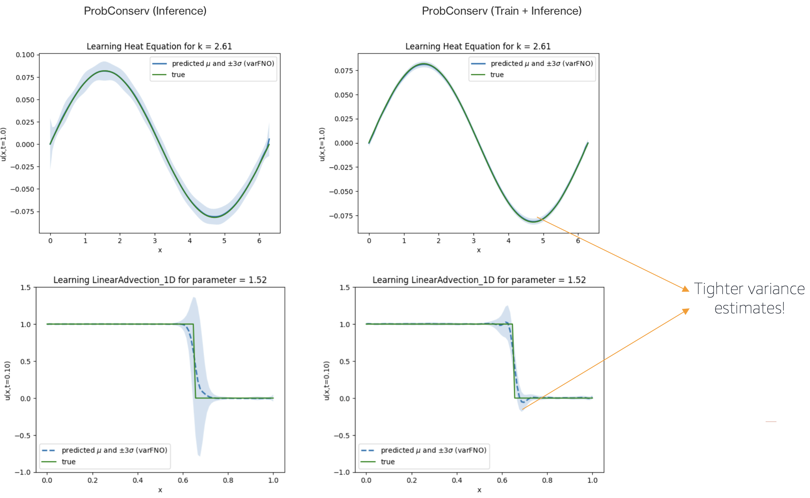
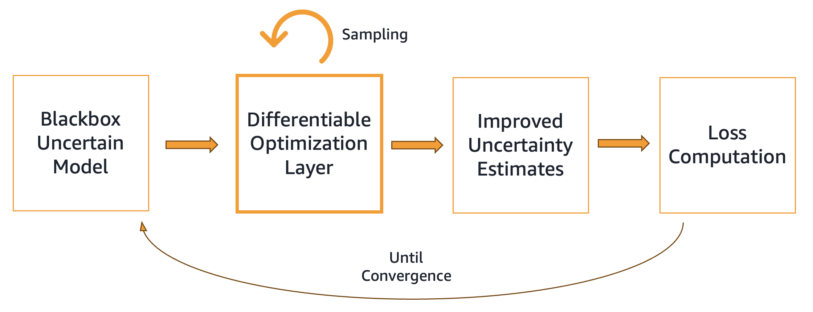
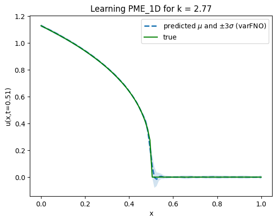
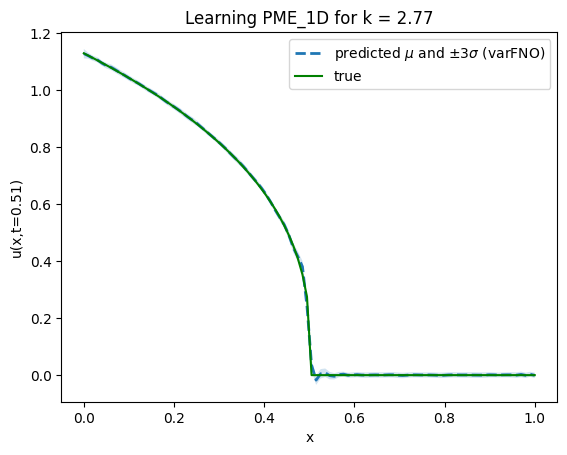
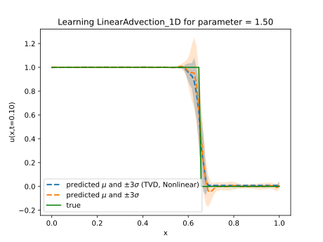
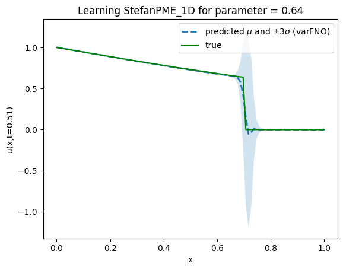
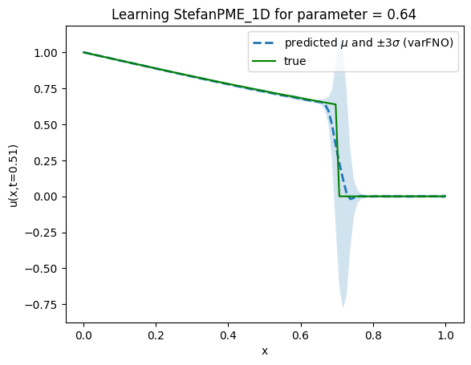

Abstract
We present a general purpose probabilistic forecasting framework, ProbHardE2E, to learn systems that can incorporate operational/physical constraints as hard requirements. ProbHardE2E enforces hard constraints by exploiting variance information in a novel way, and thus it is also capable of performing uncertainty quantification (UQ) on the model. Our methodology exploits a novel differentiable probabilistic projection layer (DPPL) that can be combined with a wide range of neural network architectures. This DPPL allows the model to learn the system in an end-to-end manner, compared to other approaches where the constraints are satisfied either through a post-processing step or at inference.
In addition, ProbHardE2E optimizes a strictly proper scoring rule — the Continuous Ranked Probability Score (CRPS) — without making any distributional assumptions on the target, which enables it to obtain robust distributional estimates. We apply ProbHardE2E to problems in learning partial differential equations (PDEs) with uncertainty estimates and to probabilistic time-series forecasting, showcasing it as a broadly applicable general setup that connects these seemingly disparate domains.
What Makes Hard Constraints Hard?
Machine learning models are increasingly applied in settings — hierarchical time-series forecasting, PDE-constrained surrogate modeling, robotics, climate science — where outputs must satisfy known physical or operational constraints exactly. A demand forecast hierarchy must be coherent (forecasts must sum up correctly). A fluid simulation must conserve mass or momentum. An economic prediction must be non-negative. Any violation is unacceptable.
Two natural approaches fall short:
- Data ≠ Constraint Manifold. Probabilistic models learn a broad distribution, not the thin nonlinear manifold C = {x : h(x) = 0}. Samples from the learned distribution generically violate the constraint.
- Soft penalties don't guarantee anything. Penalizing ‖h(û)‖² only reduces violation in expectation — it never eliminates it. There are zero guarantees at sampling time, and the penalty weight becomes a fragile tuning parameter.
Prior works that do enforce constraints exactly either operate on point estimates (no UQ), are restricted to linear constraints, require expensive Monte Carlo sampling during training, or apply constraints only as a post-processing step after training — failing to optimize end-to-end accuracy under the constraint.

Differentiable Probabilistic Projection Layer (DPPL)
ProbHardE2E follows a predictor–corrector paradigm operating on distribution parameters — not on individual samples.
Predictor step. A probabilistic backbone (e.g., DeepVAR, FNO ensembles, neural processes) outputs an unconstrained multivariate distribution Zθ(φ) ~ F(μ, Σ). This module is constraint-agnostic.
Corrector step (DPPL). The DPPL solves a constrained least-squares problem to project the unconstrained distribution onto the constraint manifold:
u*(z) := argminh(û)=0, g(û)≤0 ‖û − z‖²Q
For location-scale distributions, this reduces to a closed-form parameter update via the delta method: μ̂ = T(μ) and Σ̂ = JT(μ) Σ JT(μ)⊤, where JT is the Jacobian of the projection map. For differentiating through the corrector, we differentiate the KKT conditions via the implicit function theorem — requiring only a single linear solve, regardless of how many solver iterations were needed.
Sampling-free training. By applying the DPPL directly to distribution parameters (μ, Σ) and using a closed-form CRPS loss, ProbHardE2E avoids Monte Carlo sampling entirely during training — cutting per-epoch time by 3–5×.
| Constraint Type | Solution u*(z) | Solver | Jacobian JT |
|---|---|---|---|
| Linear Equality | PQ⁻¹ z + (I − PQ⁻¹) A†b | Closed-form | PQ⁻¹ |
| Nonlinear Equality | (u*, λ*) s.t. R(u*, λ*; z) = 0 | Newton's method | Implicit differentiation |
| Convex Inequality | argminh(û)≤0, g(û)≤0 ‖û − z‖²Q | Convex opt. solver | Sensitivity / argmin diff. |
The oblique projection (Q = Σ−1) corrects predictions along covariance-weighted directions, preserving the true uncertainty structure around heteroscedastic shocks and spikes. This outperforms the standard orthogonal projection (Q = I) in hard problems.
Results: Linear Constraints & Computational Speedup
We evaluate ProbHardE2E on five hierarchical time-series forecasting benchmarks (Labour, Tourism, Tourism-Large, Traffic, Wiki) where predictions must satisfy aggregation coherency constraints (linear equality). ProbHardE2E uses DeepVAR as the probabilistic backbone with an oblique projection and closed-form CRPS.
Speedup. Projecting directly on distribution parameters and using the closed-form CRPS eliminates Monte Carlo sampling during training. Models trained with 100 posterior samples per step (HierE2E baseline) incur a 3.3–4.6× increase in epoch time — our method avoids this overhead entirely.

Accuracy. Across the five datasets, ProbHardE2E achieves state-of-the-art CRPS on Labour, Tourism-Large, and Wiki, remaining highly competitive on Tourism and Traffic. Training with CRPS consistently outperforms NLL-trained models — even on NLL evaluation metrics — validating the use of a strictly proper scoring rule as the training objective in scientific ML.
Results: Nonlinear Equality Constraints — Porous Medium Equation
We test ProbHardE2E on the Porous Medium Equation (PME), a nonlinear PDE with a conservation constraint k(u) that controls the sharpness of the solution (larger m → sharper transition / harder problem). This requires the full nonlinear equality projection with implicit differentiation of the KKT system.
End-to-end training with the nonlinear constraint achieves up to 15–17× lower MSE and 2.5× better CRPS compared to applying the constraint only at inference time (ProbHardInf), demonstrating that the constraint must be enforced during training to realize its full benefit.


The figure above shows mean ± 3σ predictions for the PME with conservation constraint at time t = 0.51. The training parameter mtrain ∈ [3, 4] and test parameter mtest = 3.88. ProbHardE2E (right) captures the sharp front significantly better than the linear-constraint-at-inference baseline (left).
Results: Convex Inequality Constraints — Total Variation Diminishing
We impose a Total Variation Diminishing (TVD) convex relaxation — a constraint commonly used in numerical PDE methods to prevent non-physical oscillations near shocks. The discrete TVD reads: TVD = Σn,i |u(xi+1, tn) − u(xi, tn)|.
This is a convex inequality constraint; its projection requires a convex optimization solver and argmin differentiation for the Jacobian. ProbHardE2E handles this automatically via the DPPL.

Results: Hard PDE — Stefan Problem (Oblique vs Orthogonal Projection)
The Stefan problem is a free-boundary PDE with a sharp discontinuity at the phase-change front — the hardest benchmark in our suite. Here, the oblique projection (Q = Σ−1) in ProbHardE2E improves CRPS by more than 50% over the orthogonal variant (ProbHardE2E-Or, Q = I).
The oblique projection corrects predictions along covariance-weighted directions, better preserving the heteroscedastic uncertainty structure near the sharp moving boundary. Orthogonal projection — which treats all dimensions equally — loses this structure.


Conclusion
ProbHardE2E seamlessly incorporates constraints ranging from commonly used linear constraints to challenging nonlinear constraints into black-box probabilistic deep learning models via the Differentiable Probabilistic Projection Layer (DPPL). We show that our work is applicable in a wide range of scientific domains: linear coherency constraints in hierarchical time-series forecasting, and nonlinear conservation laws in PDE surrogate modeling.
Contrary to prior work that only supports linear global conservation constraints, ProbHardE2E supports nonlinear conservation constraints. We also demonstrate that training with the distribution-agnostic CRPS consistently outperforms NLL — a lesson transferable from forecasting to SciML. Future work includes local conservation constraints (finite-volume style), non-convex inequality constraints, and richer covariance parameterizations (low-rank / dense).
Poster
ICLR 2026 Poster — Download PDF
BibTeX
@inproceedings{utkarsh2026probharde2e,
title = {End-to-End Probabilistic Framework for Learning with Hard Constraints},
author = {Utkarsh, Utkarsh and Robinson, Danielle Maddix and Ma, Ruijun
and Mahoney, Michael W. and Wang, Yuyang},
booktitle = {International Conference on Learning Representations},
year = {2026},
url = {https://utkarsh530.github.io/probharde2e}
}